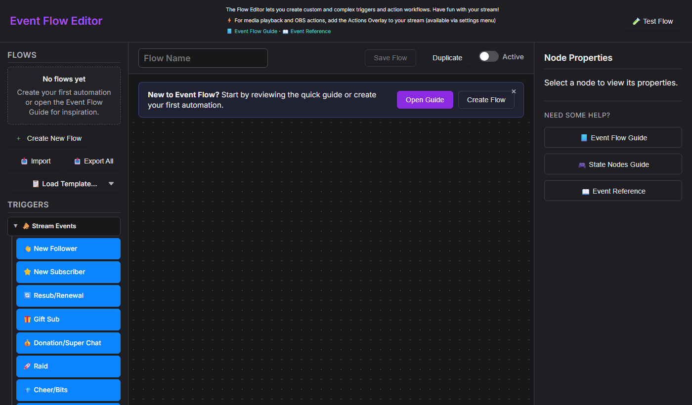
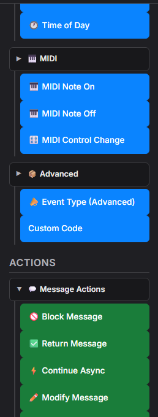
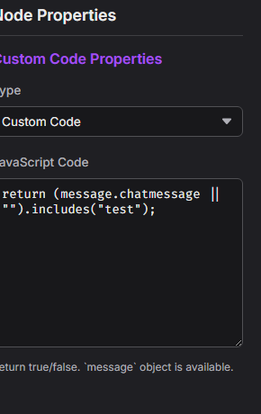
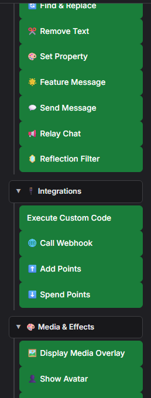
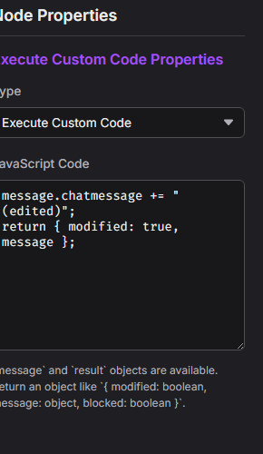
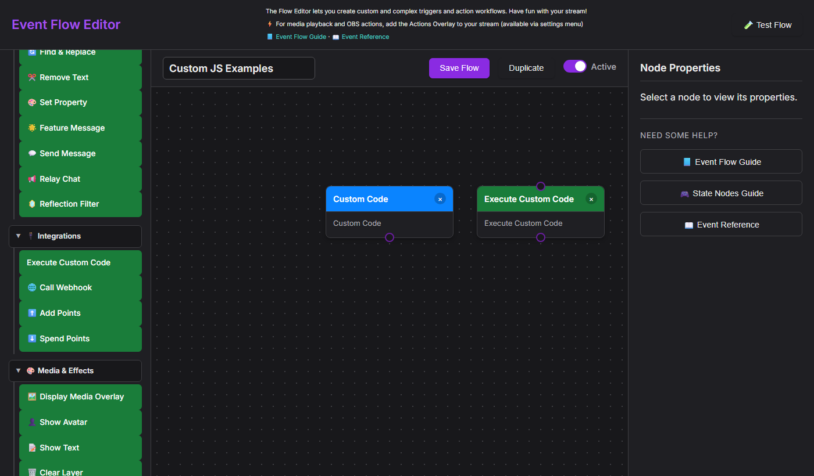
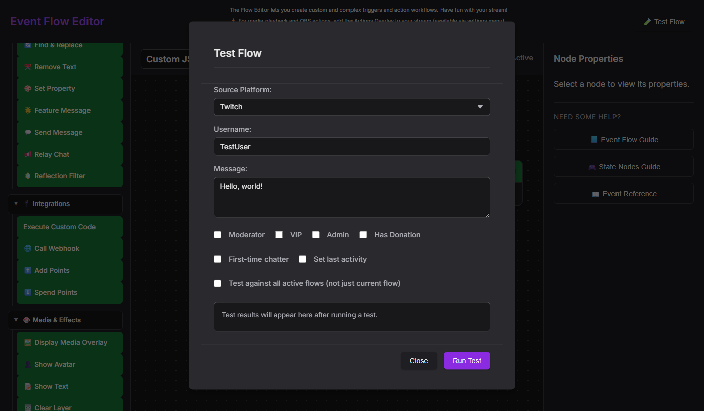

0. Quick Orientation
What is this editor?
The Event Flow editor is the “advanced automation” layer for Social Stream Ninja. It sits above the simple popup switches and lets you script your own routing logic. Use it when you need to:
- Relay chat between services with filters (e.g., mirror Twitch to Discord but block commands).
- Build loyalty-based commands, keyword games, or raffle gating with AND/OR/NOT logic.
- Trigger custom overlays, audio, OBS scenes, or webhooks based on data you enrich in the flow.
- Mix multiple platforms inside a single automation (Kick + Twitch + YouTube routed through one flow).
Think of the popup as “quick presets” and Event Flow as the toolkit for bespoke workflows.
Launch + Basics
- Open the Event Flow editor from the main dashboard's menu (desktop or extension).
- Every project is saved locally until exported. Use
Exportto back up or share. - Work inside canvases called flows. Each flow can subscribe to multiple platforms at once.
Nodes at a Glance
- Inputs (left ports) expect the message context.
- Outputs (right ports) emit the same context plus any edits.
- Logic nodes may emit both the
truechannel and an optionalfalsechannel.
Payload Structure
Every message carries a JSON object. Mandatory keys follow docs/event-reference.html (platform, type, chatname, chatmessage, etc.). Attach custom data under meta.
Flow Actions Overlay (Action Output)
Nodes such as Play Audio Clip, Display Media Overlay, and the OBS controls need a rendering surface. That surface is the Flow Actions overlay page served from actions.html. Keep it running in your broadcasting software (OBS/Streamer.bot browser docks/etc.) so Event Flow actions have somewhere to appear.
- Open the main Social Stream Ninja popup (the window loaded from popup.html or the extension icon).
- Scroll to the “Flow Actions” card. Use the [copy link] button or click the URL inside the card.
- The link looks like
https://socialstream.ninja/actions.html?session=YOURSESSION. Paste it into an OBS Browser Source (1920×1080 suggested) or open it in any overlay browser.
Once loaded, that overlay can:
- Show Tenor/GIPHY media, text, and confetti triggered by your flows.
- Play sounds (TTS, audio clips) locally so viewers hear them.
- Talk to OBS via the WebSocket settings that live under the Flow Actions section in the popup (scene switching, source toggles, replay buffer, etc.).
- Browser Source API: available only when
actions.htmlis running inside OBS Browser Source with Advanced Access Level. Scene switching works here, and recording / streaming / replay buffer actions can fall back to it. - OBS WebSocket: recommended for consistent control. Social Stream Ninja Flow Actions use the OBS WebSocket v5 API from OBS 28+ and expect the modern request set on port
4455. - Password: optional. Only append
&obspw=...to the Flow Actions URL if your OBS server is configured to require authentication. - Overlay diagnostics: append
&obsdebug=1toactions.htmlif you want a small live OBS connection badge on the overlay while troubleshooting. - Old 4.x installs: if you are still using obs-websocket 4.x / port
4444, source / filter / mute actions will not work until OBS / obs-websocket is upgraded.
- Open obs-websocket-test.html.
- Confirm
GetVersion,GetCurrentProgramScene, andGetSceneListsucceed. - Run the matching action check there before testing the full Event Flow automation.
1. What Moves Through a Node?
The Event Flow runtime passes two things through every wire:
- Payload – the event or message data object.
- Gate signal – a true/false bit telling the next node whether to run.
false socket on a Condition node). That makes it easy to build fallback logic without duplicating whole flows.
Input Expectations
- Event Sources (Twitch Message, Timers, Manual Trigger, etc.) ignore upstream input—they generate their own payload and always emit
trueunless the node itself errors. - Transform & Logic Nodes read the payload and may rewrite fields, set state, or flip the gate signal to
false. - Action Nodes fire only when the gate remains
true. They can still output an updated payload if you want to keep chaining actions.
Output Patterns
Single Output
Most nodes expose one output. Whatever enters (payload + gate) exits unchanged unless the node edits it.
True/False Outputs
Condition, Compare, Regex, and Logic nodes emit two ports. True continues through the green port; false becomes available on the gray/red port.
Pass-Through vs. Override
Some nodes (Set Variable, Math, Text Replace) mutate the payload but still forward the true/false state from their input. Others (NOT, AND, OR) recalculate the boolean themselves.
2. Logic Node Cheatsheet
These blocks answer the most common "What does true/false mean?" questions.
NOT
- Inputs: 1 boolean (true/false) derived from the previous node.
- Outputs: the inverted boolean plus the untouched payload.
- Default behavior: If nothing is connected to the NOT input it evaluates to
false, so the output istrue.
AND
- Inputs: two or more boolean signals (A, B, ...). You can leave extra ports empty.
- Outputs:
trueonly if all connected inputs equaltrue. - Use AND when multiple conditions must be satisfied simultaneously ("is subscriber" and "chat message contains !raffle").
OR
- Outputs
trueif any connected input is true. - Great for multi-platform triggers: feed Twitch + YouTube message nodes into a single OR, then unify the downstream action.
No. Many nodes already provide all-in-one filters (for example "Filter User Level" + "Contains Text"). Use AND only when the built-in options do not cover your combination, or when you want a reusable logic junction that other branches can share.
true. Keep it wired to something meaningful or disable the node so it does not accidentally unblock a flow.
3. Example Micro-Flows
A. Auto-reply Unless the Message Is a Command
Here the Regex node emits true when the line is a command. We route the false socket to our reply, so regular chatters get an acknowledgement while commands simply pass through.
B. Require Multiple Checks with AND
The AND node ensures only members using the right keyword relay to Discord. Both branches send their boolean result to the AND node; the payload from the first branch continues downstream.
C. NOT Node to Block Repeat Alerts
State Check outputs true when the alert is muted. By inverting that result, the NOT node makes sure we only play the celebration when the flag is false.
4. Preventing Echoes, Loops, and Relay Feedback
Relaying chat between surfaces is powerful but can echo infinitely if you listen to your own output. Follow these safeguards:
When you use the Relay Chat action node, enable the No Reflections (sometimes labeled No Echo) filter. That flag marks outgoing messages so the relay ignores anything it previously injected. Without it, each relayed line re-enters the flow and triggers new relays.
- Tag relayed messages. Set
meta.source = "relay"before sending, then add a "Skip if meta.source = relay" gate near your entry nodes. - Use Debounce or Cooldown nodes for alerts that should only fire once every X seconds.
- Break cycles intentionally. If two branches feed each other, add a logic node that checks a state variable ("currentlyRelaying") so the flow exits early when the flag is set.
5. Inputs, Outputs, and Practical Questions
What comes into a node?
- The full message payload.
- The gate bit (
true/false). - Optional context (state variables, timers) that the node asks for explicitly.
What leaves a node?
- The same payload unless the node edits it.
- A recalculated gate bit (logic nodes) or passthrough bit (actions).
- Most side effects (like sending chat) do not alter the payload, but points actions can attach status fields such as
pointsTotalorpointsSpendErrorfor downstream logic.
When to branch?
Whenever you want to react differently to true vs false. Drag a wire from the colored output you need (green = true, gray/red = false) to the next node.
false output, the flow simply ends there. That is perfect for filters ("block everything that fails the check") but do not forget to connect the false path if you need fallbacks.
Common Q & A
- Do I have to use AND for every pair of filters? No. Many nodes include multiple checks (for example, the basic Message Filter supports keyword + role). Use AND only for advanced combinations or when merging signals from different nodes.
- How do true/false values reach the NOT node? Any node with a green output emits
trueby default. When a condition fails, it emitsfalse. Connect that wire into NOT to invert the result. - Can a node emit a payload even if it returns false? Yes. The payload still travels through the false output; it is up to you to decide where that branch should go.
6. Template Variables Reference
Several action nodes (Show Text, Send Message, Relay Chat, TTS Speak) support template variables that get replaced with event data at runtime. Wrap variable names in curly braces like {username}.
Core Variables (backward compatible)
| Variable | Alias | Description | Example |
|---|---|---|---|
{username} | {chatname} | Display name of the user | CoolViewer123 |
{message} | {chatmessage} | Chat message text | Hello everyone! |
{source} | — | Platform name (capitalized) | Twitch, YouTube |
{type} | — | Platform name (raw) | twitch, youtube |
{donation} | {hasDonation} | Donation/tip amount | $5.00, 500 bits |
Extended Variables
| Variable | Description | Example |
|---|---|---|
{displayname} | Display name (alternate field) | CoolViewer123 |
{donationAmount} | Numeric donation value | 5.00 |
{event} | Event type identifier | cheer, raid, new_follower |
{membership} | Membership state | MEMBERSHIP, new_sponsor |
{subtitle} | Additional context | Member for 3 months |
{userid} | User's platform ID | 12345678 |
{chatimg} | User avatar URL | https://... |
{contentimg} | Attached image URL | https://... |
{rewardTitle} | Reward name when the source exposes a top-level reward title field | Highlight My Message |
{meta} | Structured event data (JSON) | {"viewers":100} |
{USERNAME}, {Username}, and {username} all work the same way.
Example Templates
- Show Text:
{username} just cheered {hasDonation}! - Relay Chat:
[{source}] {username}: {message} - TTS:
{username} says {message} - Donation Alert:
{username} donated {donation} - {subtitle}
{donation} on a regular chat message), the placeholder is replaced with an empty string rather than showing the literal {donation} text.
7. Best Practices Checklist
- Name & color your nodes so future-you knows which branch is which.
- Test with the built-in simulator (Send Test Event) before pushing a flow live.
- Group logic near the source. Filter as early as possible to avoid extra processing down the line.
- Store repeats in State nodes. Use counters, toggles, and timestamps to avoid double alerts.
- Document meta fields. When you add custom
metakeys, note them so overlays and remote clients stay consistent.
8. Further Exploration
Ready for more depth?
- Use State Nodes (counters, toggles, timers) to track context between events.
- Combine Variables + Logic to build queue systems, raffles, or scoring engines.
- Hook into the Points & Rewards system so viewers can intentionally trigger flows.
- Running the SSApp desktop app? Unlock Custom JavaScript nodes for arbitrary logic that no built-in node covers.
- Check the Event Reference for detailed payload documentation across all platforms.
This guide is intentionally standalone—copy it locally, adapt it for your team, and keep experimenting inside the editor.
9. Custom JavaScript SSApp / Desktop only
Two nodes in the Event Flow editor let you write arbitrary JavaScript that runs inside the flow pipeline: Custom Code (trigger) and Execute Custom Code (action). They are the escape hatch for anything the built-in nodes cannot express.
new Function() / eval(). Open the editor through the SSApp desktop app to enable them. In extension mode the nodes appear greyed-out with the label "Desktop only".

Custom Code — Trigger node
Drag Custom Code from the Advanced group in the Triggers panel onto the canvas. It acts as a gate: the flow continues only when your code returns true.


true or false.function(message) { ... }Must return: a boolean —
true to let the flow continue, false to stop it.Available: the
message object (see message API below).
Execute Custom Code — Action node
Drag Execute Custom Code from the Integrations group in the Actions panel. It can mutate the message, block it, or attach metadata that downstream nodes can read.


function(message, result) { ... }Should return: an object merged into
result — see result API.Available:
message (the event payload) and result (current flow result state).

The message object
Both nodes receive the full event payload as message. The fields below are always available; platform-specific events may include additional ones.
| Field | Type | Description | Example |
|---|---|---|---|
message.chatmessage | string | The chat message text (may contain HTML) | "Hello stream!" |
message.chatname | string | Display name of the sender | "CoolViewer" |
message.userid | string | Platform user ID | "12345678" |
message.type | string | Source platform (lowercase) | "twitch", "youtube", "kick" |
message.hasDonation | string | Formatted donation string if present | "$5.00", "500 bits" |
message.donationAmount | number / string | Numeric donation value | 5 |
message.event | string | Event type identifier | "new_follower", "cheer", "raid" |
message.membership | string | Membership state when applicable | "MEMBERSHIP" |
message.subtitle | string | Secondary context line | "Member for 3 months" |
message.mod | boolean | Sender is a moderator | true |
message.subscriber | boolean | Sender is a subscriber | true |
message.vip | boolean | Sender has VIP status | true |
message.chatimg | string | User avatar URL | "https://..." |
message.meta | object | Arbitrary structured data attached to the event | { viewers: 120 } |
What the action returns
Return a plain object from your action code. Any fields you include are merged into the flow's result object; fields you omit keep their current values.
| Return field | Type | Effect |
|---|---|---|
modified | boolean | Set true if you changed message fields. Tells downstream nodes the payload has been edited. |
message | object | Pass the (possibly mutated) message back so downstream nodes receive your changes. |
blocked | boolean | Set true to prevent the message from being displayed or relayed. |
return { modified: false, message };Even if you didn't change anything, returning
message keeps it flowing to the next node.
Snippet examples
Copy any of these into the JavaScript Code textarea of the matching node type.
Trigger snippets — return true to continue the flow
!queue, !raffle, !enter).Action snippets — return { modified, message }
{meta}).Complete example — VIP feature request bot
This flow listens for !feature <text> from subscribers, VIPs, or mods, reformats it as a feature request, and relays it to a second destination (e.g. Discord).
Step 1 — Custom Code trigger (paste into the trigger's JavaScript Code field):
Step 2 — Execute Custom Code action (paste into the action's JavaScript Code field):
Step 3 — Relay Chat action: add a standard Relay Chat node after the action and configure it to point at your Discord (or other) destination. No custom code needed here — the reformatted message.chatmessage flows through automatically.
!feature dark mode support, and confirm the Relay Chat destination receives the reformatted string.

Security considerations
window object and any APIs the preload script exposes (e.g. window.ninjafy). Treat imported flow files like executable code — only import flows from sources you trust.
- No network sandbox. Action code can call
fetch(). If you're accepting shared flows from others, audit the JS before activating them. - Errors are caught. A runtime error in your code returns
false(trigger) or a no-op (action) and logs to the DevTools console — the flow doesn't crash. - Syntax errors too. A
SyntaxErrorat compile time is caught the same way. Check DevTools (F12) if a node appears to do nothing.